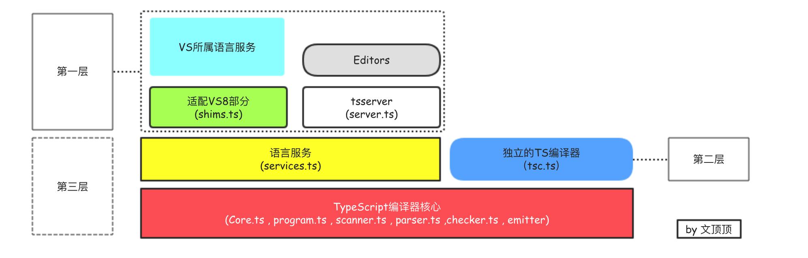

TypeScript系列 [01]-TypeScript简单介绍
1.0 TypeScript语言简单说明
简单说明
TypeScript 是微软2012年推出的一种编程语言，属于 JavaScript 的超集，可以编译为 JavaScript 执行。它最大特点是强大的类型系统和对ES6的支持，TypeScript托管于GitHub上面。
TypeScript代码，通过编译可以转换为纯正的 JavaScript代码，且编译出来的 JavaScript代码能够运行在任何浏览器上。TypeScript 的编译工具也可以运行在任何服务器和任何系统上。
设计目标
TypeScript从一开始就提出了自己的设计目标，主要如下：
遵循当前以及未来出现的ECMAScript规范。- 为大型项目提供构建机制（通过Class 、接口和模块等支撑）。
- 兼容现存的JavaScript代码，即任何合法的JavaScript程序都是合法的typeScript程序。
- 对于发行版本的代码没有运行开销。（使用过程可以简单划分为程序设计阶段和执行阶段）。
- 成为跨平台的开发工具，TypeScript使用Apache作为开源协议，且能够在所有主流的操作系统上安装和执行。
TypeScript的优势
❏ 拥有活跃的社区支持和生态
❏ 增加了代码的可读性和可维护性
❏ 拥抱 ES6 规范，也支持ES7 草案的规范
❏ TypeScript本身非常包容，兼容所有现行的JavaScript代码
TypeScript的劣势
❏ 短期投入到工作可能增加开发成本
❏ 集成到自动构建流程中需要额外的工作量
❏ 学习需要成本，需要理解接口、Class、泛型等知识
关于TypeScript更多信息，请参考TypeScript官网和TypeScript中文网站或TypeScript Github托管仓库。
2.0 开发环境和工具支持
命令行工具
安装命令：$ npm install -g typescript
-g表示全局安装，上面的命令执行后会在全局环境下安装 tsc 命令。
查看版本信息命令：$ tsc --version
可以通过$ tsc --help来查看tsc使用帮助，通过$ tsc --version命令来查看tsc版本验证是否安装成功，当前最新的版本为Version 2.9.1，安装成功后我们就可以在任何地方来执行 tsc 命令了。
我们可以通过在命令行中输入$ tsc xxx.ts命令来把文件编译为JavaScript文件，上述命令中xxx为对应文件的名称，编译完成后将得到xxx.js文件。
编辑器使用
主流的编辑器都支持 TypeScript。下面列出推荐的编辑器（点击获取编辑器或IDE对TypeScript的支持）
Atom 21世纪黑客文本编辑器（拥有众多强大插件）
WebStorm 强大的前端开发编辑器
Visual Studio Code 内置了TypeScript支持，且本身也由TypeScript实现。
3.0 TypeScript组件
TypeScript语言内部被划分为三层，每层又被一次划分为子层或者是组件。

TypeScript语言内部的每一层都有自己不同的用途。
语言层：实现所有TypeScript的语言特性。
编译层：执行编译和类型检查操作，并把代码转换为JavaScript。
语言服务层：生成信息以帮助编辑器或其它开发工具提供更好的辅助特性。